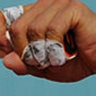

(
(
The Serve
There are a few key things to master when working on your serve:
- Keep the toss high and in front of you
- Drop the racquet behind you when your stroke reaches its maximum height on the wind up
- Do not choke up on the grip. Keep your grip a little loose and try to keep your pinkie finger practically hanging off the butt of the grip.
- Come over and down on the ball at the height of its ascent
- Snap your wrist on contact. In other words, there are two motions involved, one with the swing of the arm, the other with the snap of the wrist.
- Keep your opposite hand pointing up at the ball
- Turn you left shoulder, if you are right handed, towards the net
- Left foot (opposite foot) is in front
The grip, which is often discussed, is almost never discussed in terms of the butt of the racquet. Players are ofteen instructed on which grip to use: continental, western, etc. However, the critical piece is almost never mentioned, and that is keeping your hand very far down on the racquet grip. Note the grip Rafael Nadal uses in the photo. His hand is hanging over the end of the racquet. This allows your swing to snap and allow much more fexibility in your swing. Give it a try next time you're on the court. Try this technique on a number of strokes. You may find you have more power, more reach, and many other benefits.